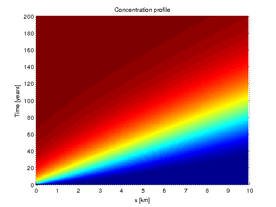

ADE1Danalytical
| main | Tutorials | Functions | website |
Returns a concentration profile for each point in x as function of time t
Version : 1.0
Author : George Kourakos
email: giorgk@gmail.com
web : http://groundwater.ucdavis.edu/msim
Date 28-Mar-2014
Department of Land Air and Water
University of California Davis
Contents
Usage
C = ADE1Danalytical(x, t, v, cf, aL, Dm, lambda, R)
Input
x: points in 1D domain where we want to compute the breakthrough curve
t: times where the concentration will be computed
v: pore velocity i.e. v=V/porosity
cf: Input concentration
aL: Longitudinal dispersion coefficient
Dm: Molecular diffusion coefficient
lambda: Decay constant
R: Retardation factor
Output:
C: [NtxNp] matrix where Nt is the number of time steps and Np is the points where we want to compute the breakthrough
Example:
In the following example we will compute the breakthrough curve for 200 years of transport along a 10 km path, which is a quite common in non-point source pollution. The velocity is 0.3 m/day. The concentration profiles will be computed at yearly basis.
Dm = 1e-7; R = 1; aL = 1000; cf = 1; lambda = 0; x = 1:100:10000; t = [0:200]*365; v = 0.3; C = ADE1Danalytical(x,t,v,cf,aL,Dm,lambda,R); surf(x/1000,t/365,C,'edgecolor','none') title ('Concentration profile') xlabel('x [km]') ylabel('Time [years]') view(0,90)